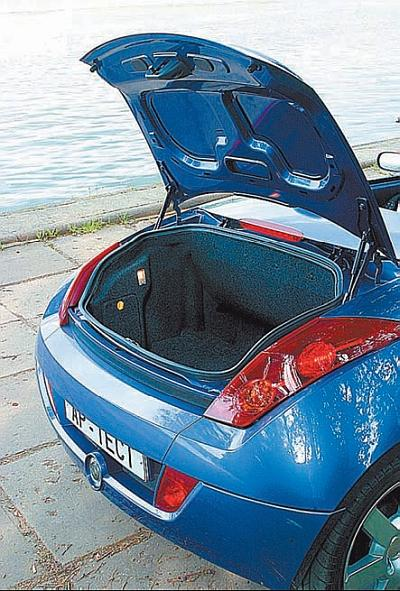

Как общаются водители во время движения.
Далее речь пойдет не о мобильной связи или телепатических способностях, а о более прозаичных вещах. Мы расскажем о том, какие сигналы и жесты используют водители для информирования друг друга о тех или иных событиях во время движения. Отметим, что эта информация выходит за рамки учебной программы, преподаваемой в автошколах, хотя владеть ею должен каждый водитель.
Самый известный сигнал, о котором немало наслышаны даже люди, далекие от автомобилизма, – это моргание фарами водителям встречных транспортных средств с целью предупреждения о наряде ГИБДД. Как и когда зародился этот обычай, доподлинно неизвестно. Однако легенда гласит, что это случилось довольно курьезно: вроде бы лет сорок назад какой-то милицейский чин в интервью газете возмутился тем, что в некоторых западных странах водители предупреждают друг друга о встрече с автоинспектором морганием фар. Советским водителям дважды повторять не нужно, и они все как один дружно переняли «передовой опыт зарубежных коллег».
Однако морганием водители предупреждают друг друга не только о скорой встрече с работниками ГИБДД, но и об опасности, например сильном гололеде, тумане, дорожно-транспортном происшествии.
Если вам дважды коротко моргнули фарами, значит, вам дают возможность проехать первым. Воспользовавшись любезностью, скажите спасибо пропустившему вас кратким морганием аварийной сигнализации (это общепринятый сигнал благодарности, используемый в самых разных случаях).
Включенный дальний свет фар движущейся позади вас машины – просьба уступить дорогу. В такой ситуации следует перестроиться вправо. Продолжение движения по своему ряду с той же скоростью считается дурным тоном, ведь человек может торопиться по неотложному делу (например, опаздывать в аэропорт). Если вы не можете перестроиться сразу (справа может ехать другое транспортное средство, которое придется или обогнать, или пропустить вперед), включите указатель правого поворота, чтобы водитель позади идущего автомобиля видел, что вы его пропустите, как только появится такая возможность.
Кстати, в западных странах просьба уступить дорогу выражается по-другому – включением левого указателя поворота. В странах СНГ в подобной ситуации применяется в основном дальний свет фар.
Если водитель встречного автомобиля несколько раз переключил дальний свет фар на ближний, значит, он вам сигнализирует о том, что его слепит свет ваших фар. Немедленно переключайтесь на ближний свет. Ослепленный водитель, который ведет машину по встречной полосе, может не справиться с управлением и выскочить на встречную полосу движения, что приведет к столкновению. Однако следует иметь в виду, что, если фары плохо отрегулированы, ослепить можно даже ближним светом.
Если у автомобиля, который движется перед вами, без видимых причин заморгал указатель левого поворота, значит, его водитель сигнализирует вам об опасности, которую вы в силу своего положения на дороге пока заметить не можете. Этим приемом обычно пользуются водители крупногабаритных транспортных средств (автопоездов, фур) на загородных трассах, когда водитель позади идущего автомобиля собрался идти на обгон, не подозревая о находящейся впереди опасности. О том, что опасность миновала, вам могут сообщить кратковременным включением правого «поворотника».
Случается, что во время движения у автомобиля внезапно отказывают какие-либо приборы, агрегаты или механизмы. Например, может выйти из строя тормозная система, лопнуть колесо, во время дождя перестанут работать стеклоочистители и т. д. В подобной ситуации необходимо незамедлительно включить аварийную световую сигнализацию, информируя тем самым водителей других транспортных средств о том, что у вас произошла экстренная нештатная ситуация.
Однако водители передают друг другу информацию не только с помощью световых приборов, но и используя специальные жесты руками. Пример: у движущегося рядом автомобиля неплотно закрыта дверь, и, если она откроется во время движения, это может привести к дорожно-транспортному происшествию, причем виновным будет признан именно тот водитель, в машине которого это произошло. Поэтому при наличии возможности следует предупредить его жестом в виде вытянутой руки (указательного пальца) в направлении незакрытой двери. Правда, при этом не следует слишком отвлекаться от управления собственным автомобилем, иначе ваши благие намерения могут привести к дорожно-транспортному происшествию, но уже с вашим участием.
Если вы видите, что у какой-то машины открылся багажник, адресуйте ее водителю следующий жест: хлопните ладонью по воздуху. Справедливости ради отмечу, что полностью открытый багажник водитель, как правило, замечает достаточно быстро (рис. 2.1).

Рис. 2.1. Иногда багажник открывается прямо во время движения
Иногда водители с наступлением сумерек не включают световые приборы, как это предписано Правилами дорожного движения. Обычно это происходит из-за забывчивости. Подать сигнал водителю, что ему пора включить хотя бы габаритные огни или ближний свет фар, можно жестом, напоминающим мигающую лампочку (резко распрямляющиеся пальцы).
Если водитель движущегося рядом автомобиля явно указывает вам рукой на обочину или край проезжей части, скорее всего, придется остановиться – вам сообщают, что у автомобиля произошла поломка, видимая снаружи.
Иногда у грузовиков или автобусов между задними колесами застревает булыжник, что очень опасно (ведь он может вылететь прямо в позади идущий автомобиль). Предупредить водителя машины о застрявшем между задними колесами булыжнике можно, показав ему фигу (да-да, простой кукиш). Жест, конечно, неприглядный, но в данном случае это единственный способ сигнализировать об опасности.